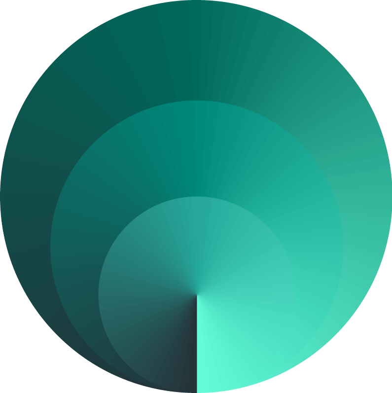
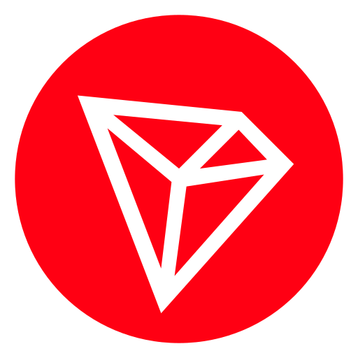

Обо мне:
Добро пожаловать на мой сайт👋Моя специальность - ручной тестировщик(Manual QA).
В основном я сосредоточен на обучении и работе над веб-сайтами, а также увлекаюсь администрированием серверов Linux, поднятием VPN.
Имею опыт работы в Postman, MySQL, Linux terminal. Знаю основы програмирования на языках Python и C#.
В свободное время мне нравится:
- администрировать свои сервера
- играть на гитаре
- кататься на велосипеде
- рыбачить на спиннинг и играть в видеоигры
- играть в настольный теннис
В настоящее время я живу в России. Ниже вы можете прочитать о моем опыте и посмотреть мои проекты.
Опыт работы:
-
Агрегатор по бронированию фотостудий
- UI, UX тесты
- Смоук и регресс тесты
-
Маркетплейс игровой валюты и предметов
- функциональное тестирование
- UI, UX тесты
- Регресс тестирование
- Интеграции
Мои проекты:
- Приватный VPN сервер 
- нет рекламы
- высокая скорость
- включение в 1 клик
- технология Vless Reality - Energy TRON 
- сдаю энергию в аренду
- приятные цены
- быстро отвечаю/отдаю
- сделки 10/30 мин, 1 час

мяу
Прочитанные книги
Я буду делиться рецензиями на книги, которые прочитал. Я люблю жанр фэнтези, поэтому основной акцент делаю именно на этих произведениях.
×
 С самого начала я был очарован тем, как Герберт создал такой уникальный и многослойный мир.
Пустынная планета Арракис с
её суровыми условиями и важным спайсом — это не просто фон, а живой персонаж, который влияет на
судьбы всех героев. Я
почувствовал, как атмосфера книги поглощает меня, и это было потрясающе.
С самого начала я был очарован тем, как Герберт создал такой уникальный и многослойный мир.
Пустынная планета Арракис с
её суровыми условиями и важным спайсом — это не просто фон, а живой персонаж, который влияет на
судьбы всех героев. Я
почувствовал, как атмосфера книги поглощает меня, и это было потрясающе.
Персонажи, особенно Пол Атрейдес, очень многогранны. Его رحلة от наследника до сильного лидера — это что-то особенное. Я отметил, как Герберт мастерски показывает внутренние конфликты и развитие Пола. Он становится символом взлета и падения, и это заставляет задуматься о нашем выборе и его последствиях.
Сюжет наполнен интригами и борьбой за власть, что также добавило динамики. Я был взволнован каждой страницей! Идеи о контроле над ресурсами и экологии, которые присутствуют в книге, кажутся особенно актуальными сегодня. Это заставляет задуматься о том, как мы взаимодействуем с окружающим миром.
Единственное, что немного смущало — это время от времени сложные термины и концепции, которые требовали дополнительного внимания. Возможно, некоторые моменты тяжеловаты для восприятия, но это не уменьшает общего впечатления.
В целом, я с уверенностью ставлю "Дюне" 8 из 10. Это произведение не только научная фантастика, но и глубокая философская работа, которая оставила у меня много мыслей и переживаний. Я безусловно рекомендую её всем, кто ищет что-то поистине увлекательное и заставляющее задуматься!
Дюна
Персонажи, особенно Пол Атрейдес, очень многогранны. Его رحلة от наследника до сильного лидера — это что-то особенное. Я отметил, как Герберт мастерски показывает внутренние конфликты и развитие Пола. Он становится символом взлета и падения, и это заставляет задуматься о нашем выборе и его последствиях.
Сюжет наполнен интригами и борьбой за власть, что также добавило динамики. Я был взволнован каждой страницей! Идеи о контроле над ресурсами и экологии, которые присутствуют в книге, кажутся особенно актуальными сегодня. Это заставляет задуматься о том, как мы взаимодействуем с окружающим миром.
Единственное, что немного смущало — это время от времени сложные термины и концепции, которые требовали дополнительного внимания. Возможно, некоторые моменты тяжеловаты для восприятия, но это не уменьшает общего впечатления.
В целом, я с уверенностью ставлю "Дюне" 8 из 10. Это произведение не только научная фантастика, но и глубокая философская работа, которая оставила у меня много мыслей и переживаний. Я безусловно рекомендую её всем, кто ищет что-то поистине увлекательное и заставляющее задуматься!
×


 Недавно я закончил читать "Властелин колец", "Сильмариллион" и "Хоббит" Дж. Р. Р. Толкина, и
хотел бы поделиться своими
впечатлениями о каждой из этих книг.
Недавно я закончил читать "Властелин колец", "Сильмариллион" и "Хоббит" Дж. Р. Р. Толкина, и
хотел бы поделиться своими
впечатлениями о каждой из этих книг.
"Властелин колец" — это, безусловно, шедевр фэнтези. С первой страницы я погрузился в величественный мир Средиземья, полный захватывающих событий, глубоких персонажей и масштабных сражений. Путешествие Фродо и его товарищей — это не просто приключение, а настоящая одиссея о дружбе, преданности и борьбе со злом. Толкин мастерски сочетает мифологию, философию и реальность, создавая нечто уникальное. Каждый персонаж, от мудрого Гэндальфа до благородного Арагорна, был проработан до мельчайших деталей, и мне было интересно следить за их развитием на протяжении всего сюжета. Я ставлю "Властелину колец" 9 из 10 — это действительно грандиозное произведение!
Что касается "Сильмариллиона", здесь ощущения уже совершенно другие. Хотя эта книга наполнена богатой мифологией и историей Средиземья, она оказалась для меня довольно тяжёлой для восприятия. Постоянные перескоки по времени, множество дат и имён, словно из учебника, затрудняли чтение. Я ощущал, что, несмотря на всю важность этой книги для понимания мировоззрения Толкина, она требует невероятных усилий, чтобы следить за сложной структурой. В итоге, я ставлю ей 5 из 10. Хотя "Сильмариллион" может быть интересен истинным поклонникам Толкина, её трудность вряд ли станет приятным опытом для большинства читателей.
"Хоббит" же — это совершенно другой мир. Эта книга читается легко и на одном дыхании, что делает её отличным введением в мир Толкина. Приключения Бильбо Бэггинса полны юмора и увлекательных сюжетных поворотов, и я с удовольствием следил за его развитием от скромного хоббита до настоящего храбреца. Несмотря на лёгкость сюжета, некоторые моменты кажутся чуть более детскими, что, возможно, делает книгу менее серьезной по сравнению с "Властелином колец". Тем не менее, "Хоббит" остаётся замечательным произведением, и я ставлю ему 7 из 10. Это приятная и весёлая история, которая оставляет после себя тёплые эмоции.
В целом, произведения Толкина — это уникальные миры, каждый из которых по-своему интересен и ценен. Но среди них "Властелин колец" занимает, безусловно, особое место!
Властелин колец, Сильмариллион, Хоббит
"Властелин колец" — это, безусловно, шедевр фэнтези. С первой страницы я погрузился в величественный мир Средиземья, полный захватывающих событий, глубоких персонажей и масштабных сражений. Путешествие Фродо и его товарищей — это не просто приключение, а настоящая одиссея о дружбе, преданности и борьбе со злом. Толкин мастерски сочетает мифологию, философию и реальность, создавая нечто уникальное. Каждый персонаж, от мудрого Гэндальфа до благородного Арагорна, был проработан до мельчайших деталей, и мне было интересно следить за их развитием на протяжении всего сюжета. Я ставлю "Властелину колец" 9 из 10 — это действительно грандиозное произведение!
Что касается "Сильмариллиона", здесь ощущения уже совершенно другие. Хотя эта книга наполнена богатой мифологией и историей Средиземья, она оказалась для меня довольно тяжёлой для восприятия. Постоянные перескоки по времени, множество дат и имён, словно из учебника, затрудняли чтение. Я ощущал, что, несмотря на всю важность этой книги для понимания мировоззрения Толкина, она требует невероятных усилий, чтобы следить за сложной структурой. В итоге, я ставлю ей 5 из 10. Хотя "Сильмариллион" может быть интересен истинным поклонникам Толкина, её трудность вряд ли станет приятным опытом для большинства читателей.
"Хоббит" же — это совершенно другой мир. Эта книга читается легко и на одном дыхании, что делает её отличным введением в мир Толкина. Приключения Бильбо Бэггинса полны юмора и увлекательных сюжетных поворотов, и я с удовольствием следил за его развитием от скромного хоббита до настоящего храбреца. Несмотря на лёгкость сюжета, некоторые моменты кажутся чуть более детскими, что, возможно, делает книгу менее серьезной по сравнению с "Властелином колец". Тем не менее, "Хоббит" остаётся замечательным произведением, и я ставлю ему 7 из 10. Это приятная и весёлая история, которая оставляет после себя тёплые эмоции.
В целом, произведения Толкина — это уникальные миры, каждый из которых по-своему интересен и ценен. Но среди них "Властелин колец" занимает, безусловно, особое место!
×
 Недавно я закончил читать "Цветы для Элджернона" Дэниела Киза, и я просто не могу не поделиться
своими впечатлениями!
Эта книга оставила у меня глубокий след и, безусловно, заслуживает высшей оценки — 10 из
10.
Недавно я закончил читать "Цветы для Элджернона" Дэниела Киза, и я просто не могу не поделиться
своими впечатлениями!
Эта книга оставила у меня глубокий след и, безусловно, заслуживает высшей оценки — 10 из
10.
С первых страниц я оказался погружён в уникальный и трогательный мир, рассказанный от лица главного героя, Чарли Гордона. Книга написана в форме его личного дневника, что добавляет ощущение интимности и достоверности. Я чувствовал, будто читаю сокровенные мысли человека, преодолевающего тяжёлые испытания и стремящегося к самосовершенствованию.
История Чарли затрагивает эмоциональные струны; её боль и радость, надежды и разочарования вызывают глубокие чувства. Как и многие другие читатели, я не мог сдержать слёз, когда он сталкивается с теми препятствиями, которые выпали на его долю. Киз мастерски передает трансформацию Чарли, и я переживал каждое его восхищение и разочарование, словно это происходило со мной.
Книга читается на одном дыхании, а её лаконичный и ясный стиль делает её ещё более притягательной. Я не мог оторваться от страниц, пока не дошёл до потрясающего финала, который оставил меня в глубоком раздумье. Это произведение не просто о интеллекте, но и о человечности, о том, что делает нас людьми, о наших мечтах и страхах.
"Цветы для Элджернона" — это книга, которая заставляет задуматься о смысле жизни, о любви и о том, как мы воспринимаем людей вокруг нас. Я с уверенностью могу сказать, что это одна из тех историй, которые остаются с тобой надолго, и я с радостью рекомендую её всем. Если вы ищете глубокое, трогательное и искреннее чтение, то эта книга — идеальный выбор!
Цветы для Элджернона
С первых страниц я оказался погружён в уникальный и трогательный мир, рассказанный от лица главного героя, Чарли Гордона. Книга написана в форме его личного дневника, что добавляет ощущение интимности и достоверности. Я чувствовал, будто читаю сокровенные мысли человека, преодолевающего тяжёлые испытания и стремящегося к самосовершенствованию.
История Чарли затрагивает эмоциональные струны; её боль и радость, надежды и разочарования вызывают глубокие чувства. Как и многие другие читатели, я не мог сдержать слёз, когда он сталкивается с теми препятствиями, которые выпали на его долю. Киз мастерски передает трансформацию Чарли, и я переживал каждое его восхищение и разочарование, словно это происходило со мной.
Книга читается на одном дыхании, а её лаконичный и ясный стиль делает её ещё более притягательной. Я не мог оторваться от страниц, пока не дошёл до потрясающего финала, который оставил меня в глубоком раздумье. Это произведение не просто о интеллекте, но и о человечности, о том, что делает нас людьми, о наших мечтах и страхах.
"Цветы для Элджернона" — это книга, которая заставляет задуматься о смысле жизни, о любви и о том, как мы воспринимаем людей вокруг нас. Я с уверенностью могу сказать, что это одна из тех историй, которые остаются с тобой надолго, и я с радостью рекомендую её всем. Если вы ищете глубокое, трогательное и искреннее чтение, то эта книга — идеальный выбор!
×
 Начну с того, что первые четыре книги серии оказались настоящим открытием! Я был захвачен миром,
созданным
автором, и с удовольствием
погружался в приключения Геральта из Ривии. Его характер, философия и борьба с моральными
дилеммами были интересными и
увлекательными. Это было чтение, от которого просто нельзя было оторваться!
Начну с того, что первые четыре книги серии оказались настоящим открытием! Я был захвачен миром,
созданным
автором, и с удовольствием
погружался в приключения Геральта из Ривии. Его характер, философия и борьба с моральными
дилеммами были интересными и
увлекательными. Это было чтение, от которого просто нельзя было оторваться!
С каждой страницей я все больше влюблялся в атмосферу, богатый фольклор и проработанных персонажей. Однако, чем ближе к финалу, тем больше я ощущал, что история теряет свою первоначальную динамику. С сожалением заметил, что автор, похоже, сам утратил интерес к серии. Заключительные книги стали менее захватывающими, и мне несколько раз приходилось заставлять себя продолжать чтение.
Что касается истории Цири, хотя она и важна в контексте всей серии, на мой взгляд, она не может соперничать с увлекательностью и сложностью истории Геральта. Мне хотелось больше узнать о приключениях и внутреннем мире ведьмака, а не слушать о действиях Цири, которые не так сильно зацепили меня.
В целом, "Ведьмак" — это культовая серия, у которой есть множество достоинств, и я рекомендую её всем любителям фэнтези. Но, как это часто бывает, история немного затянулась, и финал мог бы быть более захватывающим. Надеюсь, что другие читатели будут наслаждаться этой книгой так же, как и я в начале!
Серия книг "Ведьмак"
С каждой страницей я все больше влюблялся в атмосферу, богатый фольклор и проработанных персонажей. Однако, чем ближе к финалу, тем больше я ощущал, что история теряет свою первоначальную динамику. С сожалением заметил, что автор, похоже, сам утратил интерес к серии. Заключительные книги стали менее захватывающими, и мне несколько раз приходилось заставлять себя продолжать чтение.
Что касается истории Цири, хотя она и важна в контексте всей серии, на мой взгляд, она не может соперничать с увлекательностью и сложностью истории Геральта. Мне хотелось больше узнать о приключениях и внутреннем мире ведьмака, а не слушать о действиях Цири, которые не так сильно зацепили меня.
В целом, "Ведьмак" — это культовая серия, у которой есть множество достоинств, и я рекомендую её всем любителям фэнтези. Но, как это часто бывает, история немного затянулась, и финал мог бы быть более захватывающим. Надеюсь, что другие читатели будут наслаждаться этой книгой так же, как и я в начале!
×
 С первых страниц меня поразил тщательно
проработанный мир постапокалипсиса, в котором разворачивается сюжет. Автор искусно создал
атмосферу, полную загадок и
напряжения, что сделало чтение особенно увлекательным.
С первых страниц меня поразил тщательно
проработанный мир постапокалипсиса, в котором разворачивается сюжет. Автор искусно создал
атмосферу, полную загадок и
напряжения, что сделало чтение особенно увлекательным.
Лор книги привлекателен и захватывающ, в нем чувствуется глубокая проработка деталей. Я был впечатлен тем, как автор умело вплетает элементы страхов и надежд человечества в эту новую реальность. Постапокалиптический мир, в котором люди вынуждены адаптироваться к новым условиям, показан с реалистичностью и искренностью, заставляя задуматься о том, как мы можем измениться в экстремальных обстоятельствах.
Персонажи, их внутренние переживания и конфликты делают историю ещё более увлекательной. Мне очень понравился их путь, наполненный сложными выборами и моральными дилеммами. Каждая страница заставляла меня задумываться о жизни, человечности и о том, что значит выживать в мире, где почти всё потеряно.
В целом, "Куколка" оставила у меня только положительные впечатления. Этот роман стал настоящим праздником для любителей постапокалиптической литературы. Я с нетерпением жду возможности прочитать другие произведения автора!
Куколка"
Лор книги привлекателен и захватывающ, в нем чувствуется глубокая проработка деталей. Я был впечатлен тем, как автор умело вплетает элементы страхов и надежд человечества в эту новую реальность. Постапокалиптический мир, в котором люди вынуждены адаптироваться к новым условиям, показан с реалистичностью и искренностью, заставляя задуматься о том, как мы можем измениться в экстремальных обстоятельствах.
Персонажи, их внутренние переживания и конфликты делают историю ещё более увлекательной. Мне очень понравился их путь, наполненный сложными выборами и моральными дилеммами. Каждая страница заставляла меня задумываться о жизни, человечности и о том, что значит выживать в мире, где почти всё потеряно.
В целом, "Куколка" оставила у меня только положительные впечатления. Этот роман стал настоящим праздником для любителей постапокалиптической литературы. Я с нетерпением жду возможности прочитать другие произведения автора!
×
 Эта книга оказалась невероятно увлекательной и легкой для восприятия, словно
захватывающее приключение, которое не позволяет отбросить её в сторону.
Эта книга оказалась невероятно увлекательной и легкой для восприятия, словно
захватывающее приключение, которое не позволяет отбросить её в сторону.
С первых страниц меня пленил мир, созданный автором. Постапокалиптическая обстановка, описанная в "День трифидов", построена так мастерски, что хочется узнавать все новые и новые детали. Уиндём прекрасно передает атмосферу страха и неопределенности, возвращая нас к вечным вопросам о выживании и человечности в условиях катастрофы. Однако его повествование не перегружено сложными терминами или излишней мрачностью — наоборот, читается легко и с интересом, что делает процесс чтения настоящим удовольствием.
Персонажи и их приключения погружают нас в динамичный и напряженный сюжет, который захватывает с первых глав. Каждая встреча и каждое испытание, с которым они сталкиваются, подчеркивают хрупкость человечности и важность взаимодействия в трудные времена. Чтение не только увлекает, но и заставляет задуматься о том, как могли бы мы поступить на их месте.
В целом, "День трифидов" — это не просто история о конце света, а интересное и увлекательное произведение, которое оставляет после себя глубокие размышления. Я однозначно рекомендую эту книгу всем любителям приключений и постапокалиптической литературы. Вместе с Уиндэмом вы отправитесь в захватывающее путешествие, которое точно не оставит равнодушным!
День трифидов
С первых страниц меня пленил мир, созданный автором. Постапокалиптическая обстановка, описанная в "День трифидов", построена так мастерски, что хочется узнавать все новые и новые детали. Уиндём прекрасно передает атмосферу страха и неопределенности, возвращая нас к вечным вопросам о выживании и человечности в условиях катастрофы. Однако его повествование не перегружено сложными терминами или излишней мрачностью — наоборот, читается легко и с интересом, что делает процесс чтения настоящим удовольствием.
Персонажи и их приключения погружают нас в динамичный и напряженный сюжет, который захватывает с первых глав. Каждая встреча и каждое испытание, с которым они сталкиваются, подчеркивают хрупкость человечности и важность взаимодействия в трудные времена. Чтение не только увлекает, но и заставляет задуматься о том, как могли бы мы поступить на их месте.
В целом, "День трифидов" — это не просто история о конце света, а интересное и увлекательное произведение, которое оставляет после себя глубокие размышления. Я однозначно рекомендую эту книгу всем любителям приключений и постапокалиптической литературы. Вместе с Уиндэмом вы отправитесь в захватывающее путешествие, которое точно не оставит равнодушным!